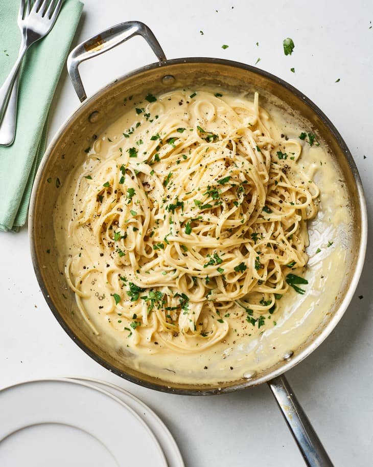

fettucine alfredo

ingredients and instructions
servings: 4 | ingredients: 7ish | prep time: 30 min
Fettucine alfredo is macaroni and cheese for adults. This is a super basic recipe for making alfredo sauce while cooking fettucine for it to go on.
If you want to attempt doing three things at once, saute some vegetables while you're making the sauce and waiting for the noodles to cook. Fettucine alfredo is good topped with mushrooms, asparagus, bell peppers, broccoli, eggplant, or probably whatever sounds like a good idea to you.
ingredients:
- 2 pounds fettucine noodles
- 2 cups grated parmesan cheese
- 4 tablespoons butter
- 1 1/2 cups half & half
- 2 cloves garlic, minced
- salt & pepper to taste
- chopped parsley or basil (optional)
instructions:
- Boil water in a pot large enough to cook 2 pounds of pasta. Start making the sauce once you add the pasta to the water.
- In a small saucepan, melt the butter over medium heat and saute the garlic until lightly browned.
- Slowly add the half & half while stirring.
- When this is simmering, slowly add the Parmesan cheese and stir until it dissolves.
- Add salt and pepper to taste.
- Stir sauce until it thickens to desired consistency, while keeping an eye on the fettucine.
- Serve immediately. Add fresh basil or parsley or something else herby to the top for flair and taste.
If you get the noodles out in time and don't burn the sauce, then your biggest remaining potential enemy is sauce lumps. If you grate your own cheese, use the smaller setting on the grater so it dissolves in the sauce easier. For some reason cheese shreds over a certain size basically never melt.